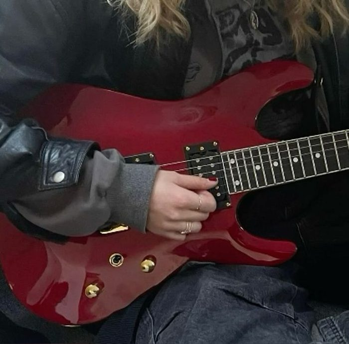
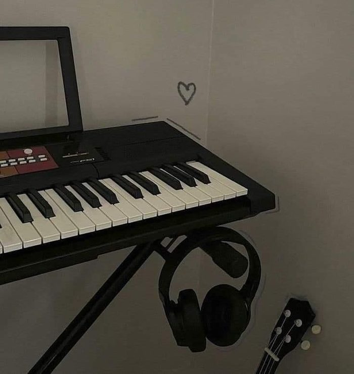
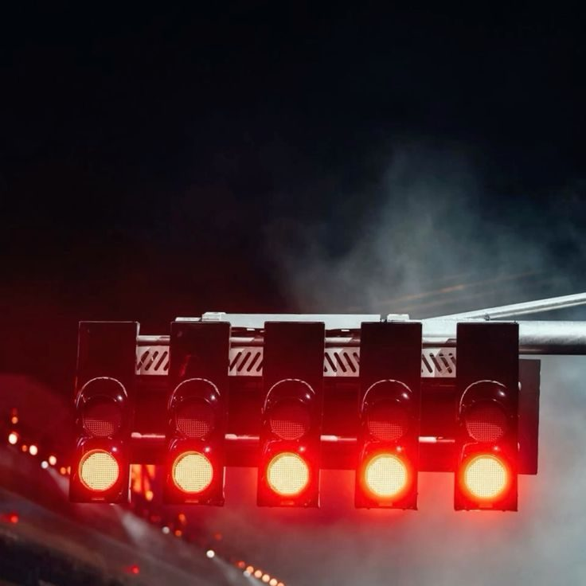
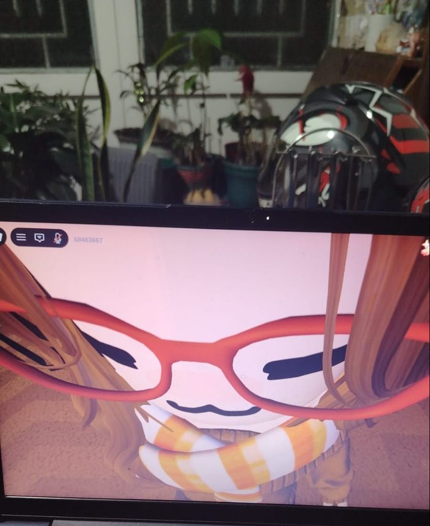
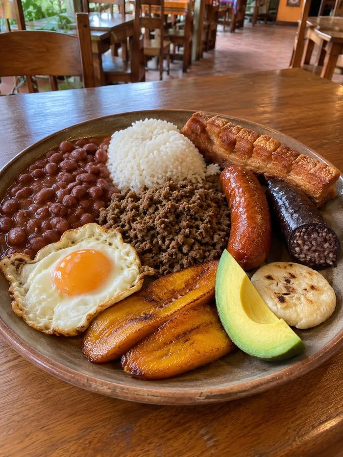
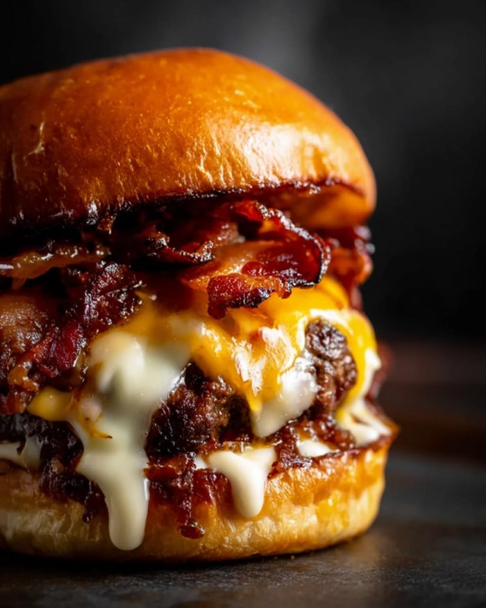
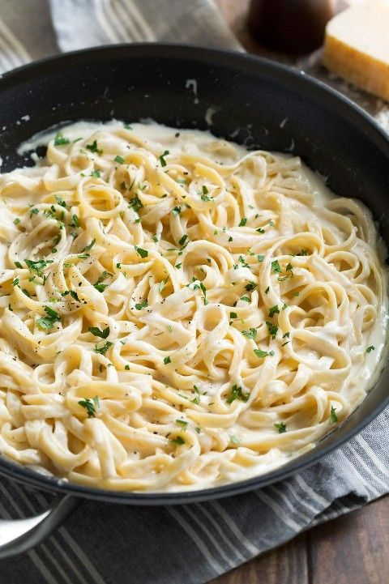
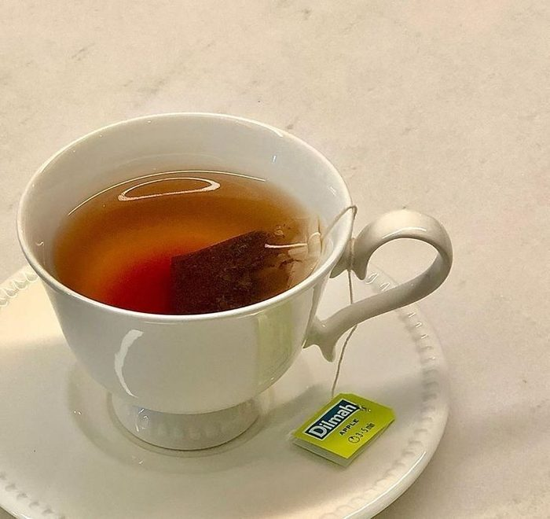

Bogotá presenta · Inspirado en Liverpool, 1960s
Mis gustos
F1 · Música · Arte · Videojuegos · Comida
Fuera del código también hay mucha Isa. Aquí está todo lo que me hace feliz. Mi color favorito es el negro, por eso el resto del sitio es oscuro… pero esta página se viste de los años 60. ヽ(•‿•)ノ
Mi banda favorita: The Beatles
Escucho todos los géneros: de The Beatles a Lana Del Rey, de Iron Maiden a lo que salga en el aleatorio. Además toco guitarra y piano y me encanta cantar. ♪(´▽｀)


Mi playlist
¿No carga? Ábrela en Spotify.

Domingo de carrera
La F1 es mi deporte favorito: me encanta la estrategia, la ingeniería que hay detrás de cada carro y la emoción de cada largada. Soy fan de Max Verstappen y de Red Bull Racing. Este sitio tiene un Modo F1 en su honor y hasta hice un sitio completo sobre la historia de la F1. ε=ε=┌( >_<)┘
| Día | Sesión | Lo que hago |
|---|---|---|
| Viernes | Prácticas libres | Reviso tiempos y ritmos |
| Sábado | Clasificación | Nervios por la pole (°ロ°) |
| Domingo | Carrera | No me la pierdo por nada |
Mis dibujos
Dibujo e ilustro personajes con marcadores, tinta, lápiz y también en digital. Haz clic en un dibujo para verlo en grande. (ﾉ◕ヮ◕)ﾉ*:・ﾟ✧
Player one: Isa
Mientras juego siempre me pregunto cómo programaron cada cosa por dentro. Estos son mis favoritos: (⌐■_■)
- Valorant
- League of Legends
- Avatar: Frontiers of Pandora
- Demon's Tilt
- Brawlhalla
- Todos los juegos de F1
- Juegos de construcción
- Juegos de música
Y mi lado Na'vi: me encanta el universo de Avatar, por eso este sitio tiene un Modo Pandora. Pruébalo con el botón de arriba.

Adoro la comida
Probar platos nuevos es uno de mis planes favoritos. Estos son los que nunca me canso de comer: (っ˘ڡ˘ς)



